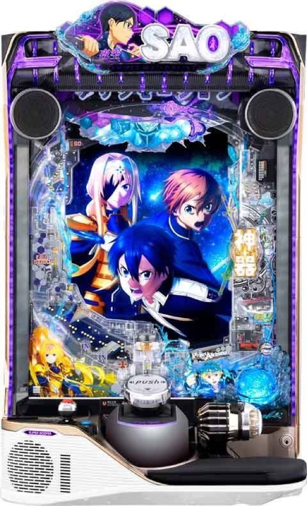

e ソードアート・オンライン アリシゼーション 夜空
SWORD RUSHから決意の刃、War of Underworldへ。
- 導入
- 2026年8月
- メーカー
- 京楽
- 分類
- パチンコ
主要スペック
遊びやすいライトミドルと上位LTを組み合わせた人気機。FAIR STARTの回転率を調整し、下位STから決意の刃を突破する流れを試せます。
- 通常時大当り約1/199.9
- RUSH突入約50%、下位ST継続約65%
- 決意の刃突破でLT、上位ST継続約75%
e ソードアート・オンライン アリシゼーション 夜空の見どころと計算条件
遊びやすいライトミドルと上位LTを組み合わせた人気機。FAIR STARTの回転率を調整し、下位STから決意の刃を突破する流れを試せます。
SAO アリシゼーション 夜空を数字で早分かり
結果では表記出玉と実獲得出玉を分け、250玉貸し・28玉交換の固定条件で差玉と収支を計算します。
SAO アリシゼーション 夜空で確認できること
初当りまでの回転数、SWORD RUSHへの突入、連チャン数と出玉を順番に抽選します。 公開されている代表的な数値をもとに遊びやすく単純化し、同じ機種では全員が同じ貸出・交換条件で比較できるようにしています。
実機にある全ての内部状態、設定差、演出、出玉削り、打ち方による差は再現していません。スペックを読み解き、早い当りと深いハマり、通常結果と上位結果の幅を比べるための体験用モデルです。
平均回転と投資目安の計算
通常時の初当り確率は約1/199.9です。当サイトでは、1,000円あたり18回転という機種別の固定条件を使い、平均投資目安を「199.9 ÷ 18 × 1,000円」で計算します。この条件では約11,100円が平均投資の目安です。
FAIR START、250玉貸し・28玉交換で固定し、SWORD RUSH突入率50%と継続率65%を簡易抽選します。表記出玉とは別に、打ち出しとオーバー入賞を簡易反映した実獲得出玉を収支へ使用します。平均値は長期間の理論上の目安であり、1回ごとの結果や実際の遊技収支を保証するものではありません。
シミュレーション結果の見方
当るまで初当りまでの回転数と投資目安
RUSHSWORD RUSHへの突入と連チャン回数
出玉表記出玉と、打ち出しを反映した実獲得出玉
最終収支実獲得出玉を28玉交換で換算した収支目安
結果は自動で「マイ記録」に保存され、同じ機種を何回試したか、最高収支、勝率をあとから確認できます。
簡易シミュレーターについて
初当り・SWORD RUSH・出玉の流れを固定条件で体験できます。JavaScriptを有効にすると、この位置にシミュレーター、演出、マイ記録、機種別ランキングが表示されます。
結果は娯楽・確率理解のための参考表示です。金銭的価値や交換価値はなく、実際の勝敗や収支を保証しません。18歳未満の方の利用はお控えください。
SAO アリシゼーション 夜空のよくある質問
SAO アリシゼーション 夜空はどんな台？
遊びやすいライトミドルと上位LTを組み合わせた人気機。 通常時大当り約1/199.9が主な確認ポイントです。
SAO アリシゼーション 夜空の平均投資目安は？
当サイトの固定条件では1,000円あたり18回転として、平均11,100円が目安です。実店舗の回転率や持ち玉状況で変わるため、実収支を保証する値ではありません。
シミュレーターでは何を体験できる？
初当りまでの回転数、SWORD RUSHへの突入、連チャンと出玉、さらにWar of Underworldを固定条件で簡易抽選します。実機の全演出や内部状態を完全再現するものではありません。
出玉と収支はどう計算する？
スペック上の表記出玉とは別に、打ち出しロスとオーバー入賞を簡易反映した実獲得出玉を算出します。250玉貸し・28玉交換の固定条件で差玉と収支目安を表示します。